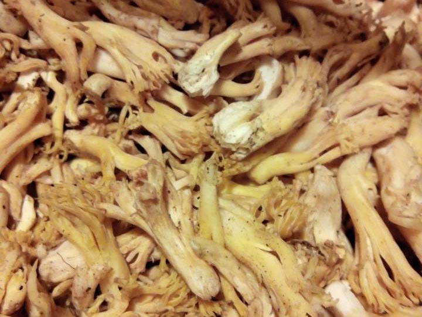
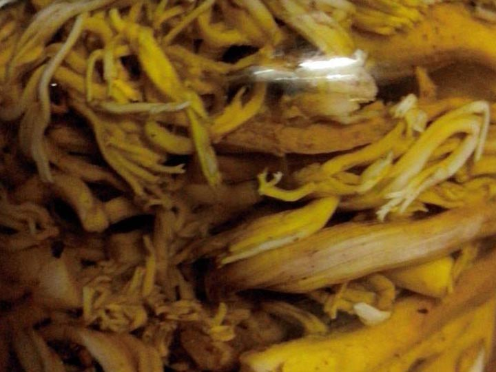

El Changle
-

- 
- 
El Changle
Changle que cientificamente es conocido con un nombre largo y complicado como (CLAVARIA CORALLOIDES, RAMARIA FLAVIA, RAMARIA VALDIVIANA)
Tres especies que reciben este nombre común y de aspecto muy similar, que crecen en el piso de los bosques de hualles, (robles jóvenes) y otros árboles del género de los Nothofagus (Raulí, Lenga, Coigüe etc); muy abundantes al inicio de otoño pero como este año esta todo atrasado o loco todavía se ven las personas y sus canastos ofreciendo el changle a $2.500.
Son tradicionalemnte comidos en empanadas, con huevitos, o trocitos de carne y actualmente nuevas combinaciones.
Les dejo aquí dos formas, una encurtida y conservados en aceite de oliva yo los preparo así porque me encantan y también los seco para ocuparlos en otras preparaciones como relleno de pastas y cualquier cosa que uno quiera.
Esta información la aprendí de Manuel Gedda.